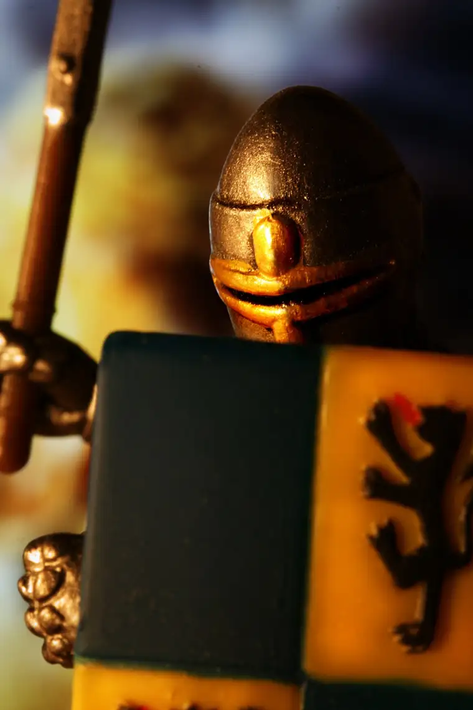

It was words that got me in trouble, and a failure to be precise enough. But I think it was more than that. In hindsight, I see it was a failure to undertake a translation I didn’t know was necessary, and may possibly be impossible to carry out; a need to bridge the gap between the language of the believer and non-believer, and perhaps their hearts as well.
I moved through the arrows, lifting my shield as needed, ducking when too tired and the shield, too heavy. And in the midst of it all, I continued my most important vocation of mothering, and living.
Pasted to my armor were the words I’d read the morning of the most intense barrage; words I quickly saw were purposefully put there for me to see this day. “The eyes of the Lord are upon those who love him; he is their mighty shield and strong support, a shelter from the heat, a shade from the noonday sun, a guard against stumbling, a help against falling.” (Sirach 43:16)
I felt the covering of love in these verses, and held them close. I knew I would need them as I moved about my week.
I read also from Isaiah 25:4, gathering more medallions to add to my vest of protection: “You are a refuge to the poor, a refuge to those in distress; Shelter from the rain, shade from the heat.”
And then, these words came, like a helmet around my heart. “My God is the rock where I take refuge; my shield, my mighty help, my stronghold.” (Psalm 18:3)
The word “rock” always stands out to me, because it is one of many nicknames I’ve earned through the years. This one came first and foremost through the mouth and heart of my father. I can still hear him commenting in the middle of my piano exercises: “Rock, I love hearing that, you know.” Or at my track meets, “Go Rock!”
But in the middle of the battle this past week, I was only rock, small “r.” Again and again, I was compelled to take refuge in The Rock; on live radio, through numerous emails, on Twitter, and everywhere I went, it seemed, and where I was called to explain my words, defend my heart, refine the complex idea I had tried to put forth that had started as an honest question, and ended in some wishing me dead.
While I would like to say the battle ended once home, unfortunately, it did not. As one of my kids and I tumbled through our own cloud of misunderstanding and hurt, finally, I went completely quiet, and so did said child, and there we sat, staring at each other, wondering in our heads I’m sure, how to get through? How do we, with our own languages, reach one another?
It seemed impossible, to say the least, but at one point, something came to me; perhaps the biggest thing I picked up in all of the inspiring words I heard at the World Meeting of Families back in September.
“The world is a hostile place; all the more reason that our homes be a sanctuary.”
I shared this idea with said child, along with a little of what I had been experiencing throughout the day. I relayed some of the words I’d been called by strangers who didn’t know my heart. I explained how easy it is to go into the world and be met with hostility. In light of that, what a tragedy to find it at home, too. I told this child how much I wanted to be an advocate, not an adversary, and that I knew it was possible. I shared what my prayer everyday has been for (this child) in particular, and expressed my belief in (this child’s) goodness.
At some point, we parted, and I had no idea what would happen next. Cooling off? A renewed commitment to duke it out later? Had my words been effective, or fallen flat, as they had with the many who had misunderstood my written sentiments — the words now being thrown back at me like stones?
Finally, after a long pause, a knock on the door to my room, and with it, the unexpected, gentle thrusting of pages — three of them filled with hand-written words. And nothing short of a miracle.
As I read, I could feel God’s consolations. As I peered into the inmost heart of my child — a place I had not glimpsed for a long while but knew existed — the illumination, and much hope, came.
In an instant, all of the noise, the anger, the mob’s frightening fury, floated away. In the sight of a child who recognized love, recognized the need to repent, recognized me as a helpmate not a foe, and who had taken steps to let me know, all of the static of the world dissipated.
And I knew that it was true; that it would profit me nothing if I were to gain the whole world but lose my soul (Matthew 6:26). Or, said another way even more precise in that moment, I would have no gain at all if I were to win the accolades of the world but lose my child.
This child’s sincerity of heart, and movement toward grace, meant everything in that moment. All of the other troubles suddenly seemed so very small and noiseless.
As much as I love writing and feel glad for this gift, the more I write, the more I value who am outside of my writing. While it can be an important and blessed tool, there are times it isn’t enough, and the actions and everyday life lived out well seem of so much more significance.
Further down in my devotional, I caught sight of the prayers of intercession, and let them soothe my worn soul: “To our words give ear, O Lord. You shield us from harm. Teach us to protect goodness in ourselves and in others…strengthen our reliance on you in every temptation…make us a shelter to all who call upon our help.”
Our Rock is so solid that when we stand with this Rock, it is impossible for us to be overcome.
“I love you Lord, my rock, my deliverer. I love you, Lord, my strength and my song.”
Q4U: How does the image of God as rock put you at ease? What other images of God bring you calm?